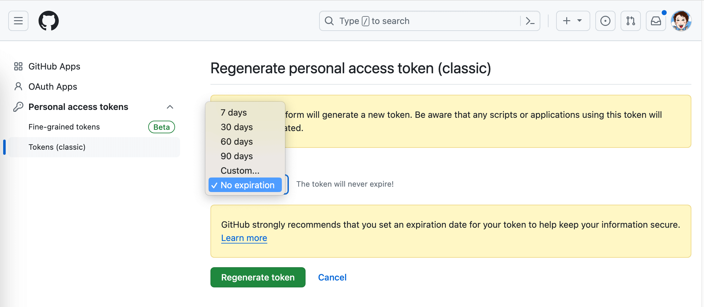
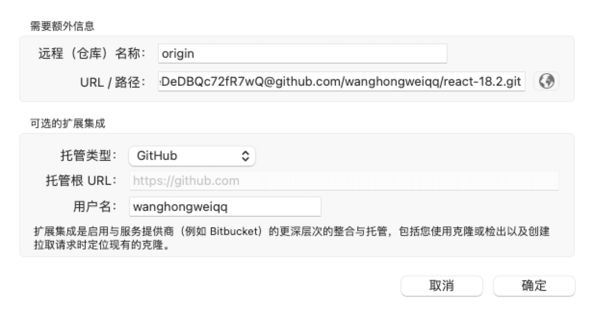

git说明
github与sourcetree配置
sourcetree推送到github时报错：Support for password authentication was removed on August 13, 2021. Please use a personal access tokens
| GitHub tokens |
1、登入你的GitHub账号 2、依次点击【右上角个人头像】→【Settings】→【Developer settings】→左边菜单【Personal access tokens】→下拉选项【Tokens (classic)】，可以选择生成一个永久有效的token 3、注意创建成功记得保存下你的token，后面需要使用  |
| sourcetree配置 |
1、配置【URL】路径为：git的HTTPS链接前加上token和@，如https://yourtoken@github.com/……，之前为git的HTTPS链接 2、使用场景如下 2.1、新建（直接克隆远程）：顶部菜单【文件】→【新建】→弹窗窗口里在【新进】下拉菜单下选择→【从URL克隆】，在弹窗的窗口中填写【源URL】 2.2、已有项目（未关联远程）：在soursetree窗口的右上角点击【设置】→弹窗窗口中选择【远程仓库】→【添加】→ 弹窗窗口中填写【URL/路径】  |